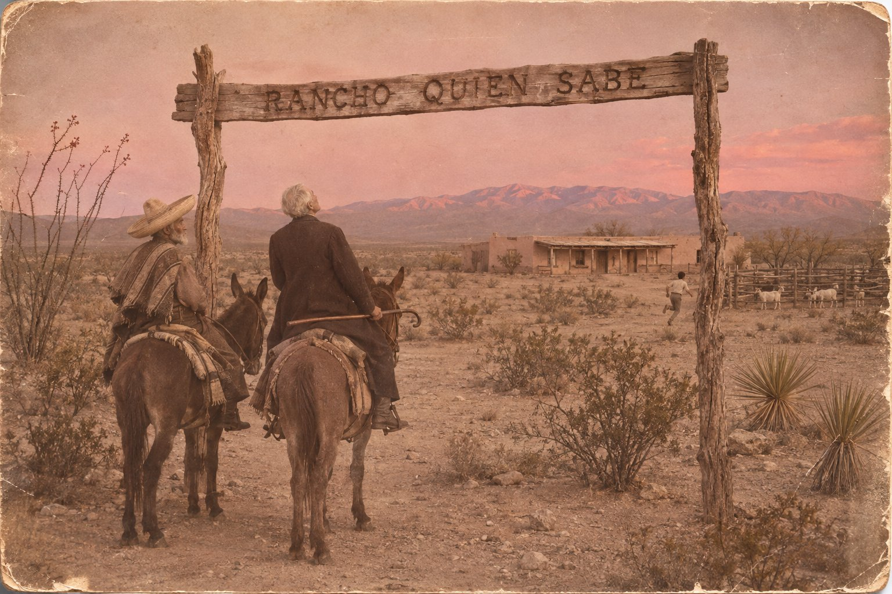

Неизвестное направление

Из письма Амброза Бирса племяннице Лоре. Вашингтон, 10 сентября 1913 года
Я собираюсь в Южную Америку, а может быть, и через неё — возможно, через Мексику, если проберусь, не будучи поставлен к стенке и застрелен как гринго. Но это лучше, чем умереть в постели, не правда ли?
Из письма Амброза Бирса Сайласу Орину Хоузу, 29 сентября 1913 года
…а оттуда вниз, к мексиканской границе (может быть, у Ларедо), ища случая перейти её и быть застреленным или повешенным.
I
В Чиуауа ночи были холодные, а дни жаркие, и человек, который приехал сюда умирать, обнаружил, что больше всего ему мешает именно это. Ночью он не спал от холода, днём задыхался от пыли, а смерть, которую он себе назначил, никак не помещалась между тем и другим: для неё всё время было то слишком рано, то слишком поздно.
Утром двадцать шестого декабря он проехал верхом четыре мили от лагеря до города, чтобы отправить письмо. Письмо было к Кэрри, его секретарше, в Вашингтон, и в нём не было ничего, что нельзя было бы прочесть вслух на почте: что дорога от Хуареса до Чиуауа была тяжёлая, что ночи холодные, а дни жаркие и что завтра он рассчитывает отправиться в Охинагу, частью по железной дороге. Под Охинагой, у самой границы, засели федералы, правительственные войска генерала Уэрты, которых армия Вильи выгнала отсюда в начале месяца. Туда уже ушла кавалерия Ортеги. Там будет бой, а значит, будет и стенка, о которой он так охотно писал племяннице.
Почтовый чиновник взял письмо двумя пальцами, как берут чужой носовой платок, и долго искал марку. Бирс ждал у окошка, опираясь на трость, и думал о том, что в любой стране мира почта — единственное учреждение, которое переживает любую революцию, потому что ни одна революция не может обойтись без писем о себе.
— Индиана, — сказал кто-то у него за спиной по-английски. — Или Огайо. Но скорее Индиана.
Бирс обернулся. Сзади стоял старик в мексиканском сомбреро, выгоревшем до цвета соломы, в сапогах, которые помнили больше дорог, чем их хозяин, и с лицом, на котором солнце сорок лет писало одно и то же слово и наконец его дописало. Борода у него была белая, коротко стриженная, глаза тоже светлые, но тёплые, и это было первое, что Бирсу в нём не понравилось. Он не доверял тёплым глазам: из его опыта, они чаще всего бывали у людей, которые собираются занять денег.
— Огайо, — сказал Бирс. — Родился там. Вырос в Индиане. Вы хорошо слышите.
— У меня было время послушать, как вы разговариваете, — сказал старик. — Вы спросили марку на таком испанском, что этот бедняга решил, будто вы хотите купить его сестру.
Говорил он медленно, растягивая гласные, как растягивают их только в одном месте на земле, и слово «бедняга» у него вышло в три слога. Бирс слышал этот выговор пятьдесят лет назад, ночью, из темноты, с той стороны поля, где кто-то просил воды и не мог допроситься.
— Миссисипи, — сказал Бирс.
— Округ Ялобуша, — согласился старик. — Только это было давно. С шестьдесят шестого я здесь. Холлоуэй. Эзра Холлоуэй.
Он протянул руку. Бирс посмотрел на руку, потом на старика, и подумал, что у него, у Бирса, за последние полвека было не так много поводов пожимать руки миссисипцам, а те, что были, он большей частью упустил. Он переложил трость и пожал. Рука была сухая и твёрдая, как козья кожа, которую забыли на солнце.
— Бирс, — сказал он.
Старик кивнул так, как кивают в ответ на фамилию, которая ничего не говорит. Это было второе, что Бирсу в нём понравилось. Первым был выговор.
⁂
Они сидели в фонде за углом от почты, где пахло жареным салом и мокрой шерстью, хотя дождя здесь не было с октября. Фонда — это то, что получится у мексиканца, если попросить его построить трактир и не дать денег на стулья: столы были длинные, скамьи вдоль стен, и за соседним столом трое мальчишек в патронташах крест-накрест ели фасоль из одной миски и спорили, кто из них убил больше федералов при Тьерра-Бланке. Судя по их подсчётам, федералов там было втрое больше, чем во всей мексиканской армии.
Холлоуэй рассказывал. Бирс слушал, потому что за полвека в газетах разучился разговаривать и научился только спрашивать.
В шестьдесят пятом, когда всё кончилось, его полк, вернее то, что от полка осталось, не стал ждать, пока янки придут переписывать их имена. Кое-кто ушёл с генералом Шелби за Рио-Гранде, к императору Максимилиану, рассчитывая продать ему свои сабли. Император сабли не купил, побоялся Вашингтона, а землю дал, и колонисты строили под Кордовой город и называли его в честь императрицы. Потом императора расстреляли, город сожгли, колонисты разъехались, кто домой, кто в Бразилию. Холлоуэй не поехал никуда. Он к тому времени жил в Коауиле, в пустыне к востоку отсюда, и был женат на женщине по имени Рефухио, которая не знала по-английски ни слова и не собиралась учить, потому что ей, как она говорила, и так было понятно всё, что он хотел сказать.
— Что значит Рефухио? — спросил Бирс.
— Убежище, — сказал Холлоуэй. — Её так назвали в честь Богоматери. А получилось в честь меня.
Рефухио умерла девять лет назад. Сын их погиб в шахте под Сьерра-Мохадой, когда там ещё работали рудники. Невестка вышла замуж в Торреоне и уехала, а внук остался у деда, и теперь внуку семнадцать, и он, конечно, сбежал на войну.
— Конечно, — сказал Бирс.
— Вы так говорите, будто сами сбегали.
— Мне было восемнадцать, — сказал Бирс. — Я записался через две недели после того, как ваши обстреляли форт Самтер. В Девятый Индианский.
Холлоуэй поставил кружку.
— Девятый Индианский, — сказал он. — Армия Огайо. Бьюэлл. Дивизия Нельсона.
— Бригада Хейзена.
— Шайло, — сказал Холлоуэй, и это слово, которое пятьдесят лет было для Бирса названием кошмара, а потом названием одного из лучших его очерков, а потом просто названием, прозвучало у него совсем иначе: как имя женщины, которую оба когда-то знали и о которой лучше не говорить при посторонних.
Они помолчали. Мальчишки за соседним столом договорились, что убили при Тьерра-Бланке по сорок федералов каждый, и пошли искать, где тут продают текилу в долг.
— Мы пришли вечером, — сказал Бирс. — В воскресенье, на пароходах. Ваши к тому времени загнали Гранта в реку, и на берегу под обрывом сидели тысячи его людей, которые больше не хотели воевать ни за какую республику. Мы шли сквозь них, как сквозь стадо. Потом пошёл дождь. Утром, до рассвета, нас подняли и повели вперёд.
— А мы ночевали в ваших палатках, — сказал Холлоуэй. — Ели ваши сухари. В понедельник в пять утра, в тумане, наш батальон выслали вперёд стрелками. Бригада Чалмерса. Мы думали, что Грант бежит за реку. А из тумана вышли вы.
— Это были мы, — сказал Бирс. — Хейзен любил ходить первым, чтобы его было видно в газетах.
— Потом, у пшеничного поля, — сказал Холлоуэй медленно, будто проверял каждое слово, как ступеньку, на которую можно не ступить, — вы взяли нашу батарею. А потом мы отбили её обратно, и вас отбросили, и всё это время шёл дождь. Меня ранило в ногу, вот сюда, повыше колена. Я лежал в лощине среди убитых и думал, что умру, потому что ваши идут назад, и сейчас пойдут ещё раз, и кто-нибудь меня доколет. Они всегда докалывали, когда шли назад. И пошли. Один перешагнул через меня, сержант, совсем мальчишка, весь чёрный от пороха, лицо как жёваное. Он поставил ногу рядом с моей головой и посмотрел на меня. А потом сунул мне в руку свою флягу и сказал: «Лежи, Джонни. Твоя война кончилась». И пошёл дальше.
Бирс смотрел на свои руки. Руки были старые, в пятнах, и он не узнавал их так же, как не узнавал сейчас того мальчишку в лощине. Он помнил из того утра многое. Он помнил белые лица убитых в мокром лесу, в низине, где накануне горела трава. Он помнил раненого сержанта-федерала, огромного, который лежал на спине и дышал, хотя дышать ему было нечем. Помнил капли дождя, крохотные лужицы, розоватые от крови. Флягу он не помнил.
— Это были вы? — спросил Холлоуэй.
Бирс мог бы ответить, что был в то утро сержантом и что пороховой гарью тогда были вымазаны все. Мог бы ответить, что да, это был он, и посмотреть, как у старика дрогнет лицо. Он сорок лет зарабатывал на жизнь тем, что говорил людям неприятную правду, и ещё тем, что иногда говорил им приятную ложь, когда это было смешнее. Но сейчас он не нашёл в себе ни того, ни другого.
— Не знаю, — сказал он. — Не помню.
Холлоуэй кивнул, будто этого и ждал.
— Тогда будем считать, что вы, — сказал он. — Мне так удобнее. А вам всё равно.
Бирсу было не всё равно, и это его неприятно удивило.
⁂
Внук отыскался к полудню, в казарме у вокзала, где квартировал эскадрон, отставший от Ортеги. Это был худой мальчишка с ружьём, которое было старше его самого, и с лицом деда, только без тех сорока лет солнца. Звали его Томас. По-английски он говорил хуже, чем Бирс по-испански, но лучше, чем Бирс по-испански думал.
Капитан эскадрона, молодой и весь в серебре, как шкатулка, отдавать Томаса не хотел. Он сказал, что революции нужны все её сыновья. Бирс достал из внутреннего кармана бумагу с подписью генерала Вильи, где было сказано, что подателю сего надлежит оказывать всяческое содействие, а следом кожаный кошелёк. Он вёз с собой из Штатов золото, американские двадцатидолларовые монеты, потому что знал, что в стране, где каждый генерал печатает собственные деньги, имеют цену только чужие. Он отсчитал на стол пять монет. Капитан посмотрел на монеты, потом на подпись Вильи, потом на Бирса.
— Революции, — сказал Бирс по-английски, а Холлоуэй перевёл, — нужно оружие. Оружие стоит денег. Сын за пять ружей — это хороший обмен даже для революции.
Капитан подумал и сказал, что революция согласна, если сеньор добавит шестую монету за то, что мальчик уносит казённый патронташ. Бирс добавил. Патронташ был кожаный, потёртый, с тремя патронами из сорока, и стоил, по самой щедрой оценке, двадцать центов.
Томас стоял у стены, бледный от злости, и смотрел на деда так, как семнадцать лет смотрят на семьдесят. Потом посмотрел на Бирса.
— Вы кто такой? — спросил он по-испански. — Зачем вы меня купили?
Бирс понял не всё, но понял главное. Он подошёл к мальчику, медленно, потому что колено у него в последнее время сгибалось неохотно, и сел рядом на скамью у стены казармы.
— Я — человек, который был тобой, — сказал он, а Холлоуэй переводил, стоя над ними и глядя в сторону, на рельсы. — В восемнадцать лет я записался в армию и пошёл воевать за свободу. Я был уверен, что свобода — это что-то, за что можно умереть. Потом я лежал в лесу у реки Теннесси, и вокруг меня лежали люди, которые за неё умерли, а дождь шёл на всех одинаково. Санитары ставили большие палатки и при свечах относили туда раненых. Палатки всё время принимали раненых и никогда не наполнялись, всё время выносили мёртвых и никогда не пустели. Потом я ещё три года делал то же самое, и за это мне дали чин. А потом я пятьдесят лет писал о том, что видел, и меня называли злым человеком, потому что я не врал.
Томас слушал. Холлоуэй переводил ровным голосом, как переводят цены на ярмарке.
— Я приехал сюда, — сказал Бирс, — чтобы посмотреть, умеют ли мексиканцы стрелять. Я старый человек. Мне всё равно, куда они будут стрелять. А тебе нет, потому что у тебя ещё есть, во что попасть.
— Это вы всё сами придумали, — сказал Томас.
— Да, — сказал Бирс. — Я всё всегда сам придумываю. Это моя профессия. Но про палатки — правда. Про них я придумать не смог бы, у меня не хватило бы таланта.
Мальчик ничего не ответил. Он снял патронташ, подержал его в руках и надел обратно. Потом встал и пошёл за дедом к вокзалу, не оглядываясь. Бирс смотрел ему в спину и думал, что видел эту спину пятьдесят лет назад в зеркале.
⁂
Вечером они сидели в той же фонде. Томас спал на скамье, укрывшись дедовым пончо, и во сне был ещё моложе, чем днём. Холлоуэй курил трубку.
— Поедемте с нами, — сказал он.
Бирс засмеялся.
— Куда?
— Ко мне. На ранчо. Там козы, и пустыня, и тихо. Там горы, на которые смотришь утром и думаешь, что их нарисовали, а вечером думаешь, что их нарисовали заново. Там никого нет. Даже революции, она до нас ещё не дошла, а когда дойдёт, у неё не будет для нас времени.
— Мистер Холлоуэй, — сказал Бирс, — я приехал в Мексику не за тишиной.
— Знаю, — сказал Холлоуэй. — Вы приехали за стенкой. Я это понял, когда вы отсчитывали капитану золото. Так отсчитывает деньги только человек, которому они больше не понадобятся.
Бирс перестал смеяться.
— У меня тоже есть стенка, — продолжал Холлоуэй, будто говорил о погоде. — Саманная, у загона для коз. Тёплая, на солнце. Если вам непременно нужно, станете к ней, когда захотите. Я даже ружьё дам, у меня осталось одно, ещё с Миссисипи. Только оно не стреляет с восемьдесят третьего.
— Вы смеётесь надо мной.
— Немного, — сказал Холлоуэй. — Вы надо мной тоже. Это ничего. Мы оба старые. Нам можно.
Бирс посмотрел на спящего мальчика, потом в окно. На улице горели костры, у костров пели солдаты, где-то стреляли в воздух, и это означало, что революция празднует Рождество, которое уже кончилось. Ему вдруг пришло в голову, что он ни разу в жизни не праздновал Рождество с кем-нибудь, кого не обязан был терпеть.
Он вспомнил статью из своего словаря, которую писал лет двадцать назад и которой гордился. «Дружба — корабль, достаточно большой, чтобы нести двоих в хорошую погоду, но только одного — в дурную». Тогда он считал, что это смешно, потому что верно. Сейчас он подумал, что это верно только для тех, кто не видел вместе по-настоящему дурной погоды, а он и этот миссисипец видели её с разных сторон одного поля, и корабль, кажется, выдержал.
— Где ваше ранчо? — спросил он.
Холлоуэй вышел, чтобы посмотреть на мулов. Мальчик проснулся, сел, потёр глаза и посмотрел на Бирса без вражды, просто сонно.
— Куда мы едем? — спросил его Бирс по-испански, медленно, на том испанском, на котором продают сестёр.
Томас пожал плечами.
— Quién sabe, — сказал он, лёг и снова уснул.
«Кто знает». Бирс уже слышал это здесь сто раз. Так мексиканцы отвечали на любой вопрос, от «когда будет поезд» до «кто победит в революции», и это было, пожалуй, самое честное, что он слышал в жизни от целого народа. Он достал из кармана начатое утром письмо к Бланш, которая в последнем письме обвинила его в том, что у него нет ни чувств, ни друзей, и на которую он рассердился, и пожалел об этом. Он перечитал его. Письмо было неплохое, сердитое ровно настолько, насколько он хотел. Он дописал постскриптум: почты здесь нет, а иногда нет и поездов до Эль-Пасо, он забыл её адрес и пошлёт письмо через Лору. Подумал и добавил последнюю строчку, которая показалась ему остроумной.
Он мог бы написать так, как сказал мальчик, но Бланш не знала испанского, и он перевёл.
Из дневника Кэрри Кристиансен, секретаря Бирса. Запись о письме от 26 декабря 1913 года
Ехал верхом четыре мили, чтобы отправить письмо. Дорога из Хуареса в Чиуауа тяжёлая — ночи холодные, дни жаркие. Рассчитывает (завтра) отправиться в Охинагу, частью по железной дороге…
Из письма Амброза Бирса Бланш Партингтон. Чиуауа, 26 декабря 1913 года. Постскриптум
Не знаю, как и когда вы получите это письмо: почты нет, а иногда нет и поездов, которые довезли бы что-нибудь до Эль-Пасо… Что до меня, я уезжаю завтра в неизвестном направлении.
II
Поезд пошёл на юг, а не на северо-восток, к Охинаге, и это было первое, что Бирс в своей жизни сделал не туда, куда собирался, с удовольствием.
Это был не поезд, а то, что остаётся от поезда после двух лет революции: паровоз, который пыхтел, как астматик на лестнице, и Бирс слушал его с профессиональным сочувствием, и за ним дюжина товарных вагонов. В вагонах ехали солдаты, их лошади, их жёны, их дети, их куры и их кровати, а на крышах ехали те солдаты, которым не хватило места в вагонах, и солдатки, которые варили на крышах кофе на жаровнях, и Бирс так и не понял, как они удерживают кофейники на ходу. Солдаток здесь называли солдадерами. Солдадеры пели одну и ту же песню, все и всё время, и к вечеру первого дня Бирс выучил её наизусть и возненавидел, а к утру второго смирился, как смиряются с зубной болью, которая не проходит, но и не усиливается.
Шли медленно. Через каждые двадцать миль путь был разобран, где-то федералами, отступавшими на юг, где-то вильистами, отступавшими на север месяцем раньше, и никто уже не мог сказать, чья это работа, потому что разобранный путь у всех выглядит одинаково. Тогда все вылезали, и ремонтный поезд, шедший впереди, подвозил рельсы, и рабочие укладывали их, а солдаты сидели вдоль насыпи и смотрели, как работают рабочие, и это было единственное время, когда в Мексике было тихо.
Холлоуэй сидел рядом с Бирсом на ящике с патронами, Томас спал на мешках. Бирс достал записную книжку.
— Что вы всё время пишете? — спросил Холлоуэй.
— Ничего, — сказал Бирс. — Это привычка. Пятьдесят лет я записывал всё, что видел, на случай, если увиденное окажется глупее, чем я смогу придумать. Обычно так и оказывалось.
— И что вы видите сейчас?
Бирс посмотрел в книжку.
— Что революция, которая хочет разрушить старый мир до основания, первым делом разбирает рельсы, по которым сама же собирается ехать. Это хорошая мысль. Её надо куда-нибудь продать.
— Кому?
— В том-то и беда, — сказал Бирс и закрыл книжку. — Покупателей у меня больше нет.
Он не сказал Холлоуэю, что последние книги его собрания сочинений, двенадцать томов, которые он издавал пять лет и вычитывал сам, до последней запятой, распродавались так плохо, что издатель перестал отвечать на письма. Не сказал, что в Вашингтоне за последний год у него было больше похорон, чем обедов. Не сказал, что пережил обоих сыновей и жену, с которой разошёлся, и что дочь его, единственная, кто остался, звала его к себе на место, приготовленное в семейной ограде, а он ответил ей, что не хочет лежать там и что всё уже устроено. Он думал, что всё устроено. Сейчас, сидя на ящике с патронами у разобранных рельсов, он впервые за много месяцев не был в этом уверен, и неуверенность эта была приятной, как сквозняк в жаркой комнате.
Холлоуэй не спрашивал. Это была третья вещь, которая Бирсу в нём нравилась, и он начинал опасаться, что их станет слишком много.
⁂
В Хименесе поезд встал совсем. Дальше на юг, у Эскалона, говорили, были федералы, а может быть, уже не были, а может быть, были вильисты, которые выдавали себя за федералов, чтобы проверить, кто обрадуется. Холлоуэй купил трёх мулов, торгуясь так долго и так спокойно, что продавец, кажется, в конце концов доплатил бы ему сам, лишь бы тот ушёл. Дальше они ехали верхом.
Пустыня начиналась сразу за городом и уже не кончалась. Здесь она называлась Больсон-де-Мапими, «Мапимийская котловина», и была плоской, как стол, на котором кто-то забыл горы: горы стояли по краям, синие, а иногда розовые, и с каждым днём не приближались. Росли тут только креозотовый куст, который пахнет после редкого дождя так, что этот запах помнят всю жизнь, и окотильо, похожее на пучок прутьев, воткнутых в землю шутником, и юкка, которую мексиканцы называли пальмой. Днём было жарко, ночью холодно, и Бирс заметил, что больше не задыхается. Сухой воздух пустыни сделал для его лёгких за неделю то, чего не сделали за десять лет врачи в Вашингтоне.
По вечерам они спорили о Гранте. Холлоуэй считал Гранта мясником, который победил только потому, что у Севера было больше мяса. Бирс тоже считал Гранта мясником, но мясником, который в первый день под Шайло проявил поразительную беспечность, оставив армию без окопов, а это, по мнению Бирса, было хуже мясничества, потому что мясник хотя бы знает, что режет. Они спорили по-настоящему, со злостью, и Томас, который не понимал и половины, смотрел на них с другой стороны костра, как смотрят на двух старых псов, которые рычат друг на друга, но не кусаются.
— Знаете, что смешно? — сказал однажды Холлоуэй. — Пятьдесят лет мне не с кем было поругаться о Гранте.
— А мне — не с кем было согласиться, — сказал Бирс.
⁂
На пятый день они пришли в Сьерра-Мохаду.
Это был горняцкий городок у подножия голой горы, горы, которую, как сказал Холлоуэй, назвали «мокрой» за то, что на ней никогда не бывало воды. Американская компания добывала здесь серебро и свинец, пока не пришла революция, а потом работы встали, инженеры уехали, рабочие разбрелись, и в городке остались только старики, собаки и небольшой отряд федералов, который никто не трогал, потому что никому не было дела до городка, где больше нечего было взять. Ветка железной дороги от Эскалона сюда давно не работала: шпалы растащили на дрова.
Холлоуэй сказал, что ночевать здесь придётся, потому что мулы устали, а до ранчо ещё день пути. Он сказал также, что федералам не следует знать, откуда Томас. Мальчик спорол с куртки красную ленточку вильиста ещё в Хименесе, но патронташ не снял.
Кантина в Сьерра-Мохаде была одна. Бирс пошёл туда, потому что был американцем, а американцу в мексиканском городке некуда больше пойти вечером, кроме как туда, где его будут разглядывать. Его разглядывали. За столом у двери сидели трое федералов, молодых, не старше Томаса, в мундирах, из которых давно выросли или до которых не доросли, и пили мескаль.
Бирс сел за соседний стол, заказал то же самое и достал книжку. Он стал спрашивать хозяина кантины, громко и на самом плохом испанском, на каком мог, какие тропы ведут отсюда на юг, к Торреону, и далеко ли до армии генерала Вильи, потому что он, американский журналист, ищет армию генерала Вильи, чтобы описать её для газет. Хозяин смотрел на него с ужасом. Федералы смотрели с интересом. Бирс записывал ответы хозяина в книжку, переспрашивал и снова записывал.
Он делал это нарочно. Если трое мальчишек в мундирах будут разглядывать сумасшедшего старого гринго, который ищет армию Вильи на территории федералов и записывает тропы в книжку, они не будут разглядывать другого мальчишку, который в это время поил мулов у колодца вместе со своим дедом. Он прикрыл Томаса так, как в своё время прикрывал отход роты: тем, что встал на виду. Он рассчитывал, что старик, который спрашивает о Вилье в лицо федералам, покажется им скорее помешанным, чем опасным. Этот расчёт был не лучше многих, которые он делал в жизни, но и не хуже.
Один из федералов, тот, что постарше, встал, подошёл и спросил, кто он такой. Бирс назвал себя. Федерал спросил, что он пишет. Бирс протянул ему книжку. Федерал полистал её, ничего не понял, потому что Бирс писал по-английски и очень мелко, вернул книжку и долго смотрел на старика.
— Вы шпион, — сказал он наконец.
— Я слишком стар, чтобы быть шпионом, — сказал Бирс. — Шпионов не берут после шестидесяти. У них трясутся руки.
Федерал посмотрел на его руки. Руки у Бирса не тряслись. Это его, кажется, и смутило.
Ночью, уже после полуночи, Холлоуэй тронул Бирса за плечо. Бирс не спал. Они лежали в сарае за кантиной, на соломе, которую хозяин уступил им за американский доллар, и Бирс слушал, как во дворе ходят и разговаривают люди, и среди голосов был голос того федерала.
— Утром они придут за вами, — сказал Холлоуэй. — Я слышал, как они говорили. Их капитан вернётся из Эскалона, и они вас ему покажут. Капитан у них, говорят, человек решительный. Мулы оседланы. Томас уже на дороге.
Бирс сел. Он подумал, что вот она, его стенка, сама пришла к нему, и пришла вовремя, и почти такая, как он писал Лоре: мексиканская стенка у кладбища, где хоронят без имён. Завтра утром он мог бы стать к ней, и это было бы красиво, и в газетах написали бы, что Бирс умер так, как жил, — с усмешкой и назло всем. Он думал об этом с полминуты. Потом понял, что ему не хочется. Это было так неожиданно и так глупо, что он засмеялся, тихо, чтобы не услышали во дворе.
— Что смешного? — шёпотом спросил Холлоуэй.
— Ничего, — сказал Бирс. — Я только что узнал, что хочу посмотреть на ваших коз.
Прежде чем уйти, он вынул из кармана два старых конверта, пустых, с его именем и вашингтонским адресом, — на одном был обратный адрес из Окленда, — и сунул их за стропило над дверью сарая. Холлоуэй смотрел, не понимая.
— Это зачем?
— Миру нужны могилы, — сказал Бирс. — Он их любит больше, чем людей. Если мир будет меня искать, пусть найдёт хоть что-нибудь. А если капитан утром захочет кого-нибудь расстрелять, он хотя бы будет знать, что опоздал.
Они вывели мулов за город по сухому руслу, где копыта не стучат по камню. Когда взошла луна, Сьерра-Мохада была уже позади, а гора над ней стояла чёрная, как вырезанная из бумаги, и по-прежнему сухая, назло своему имени.
Из письма Феликса Зоммерфельда, представителя Вильи в Соединённых Штатах, которого в 1914 году генерал Скотт просил разыскать Бирса, — биографу Бирса Кэри Маквильямсу, 12 мая 1930 года
Мистер Бирс уехал из города Чиуауа где-то в январе 1914 года на юг…
Из рассказа американского наёмника Текса О'Рейли, служившего у Вильи, — о старом американце, которого в 1914 году в Сьерра-Мохаде застрелили федералы. В пересказе
Федералы заподозрили старика, который расспрашивал о тропах и что-то записывал. Он говорил, что ищет армию Вильи, хотя на самом деле оставил её позади, в Чиуауа. Старый мексиканец достал из-за стропила два пустых конверта на имя Бирса. «Никакой тайны тут нет. Я мог бы пройти прямо к его могиле».
III
Ранчо стояло в долине между двумя хребтами, там, где пустыня делала вид, что ей надоело быть пустыней, и из-под камней выходила вода, немного, ровно столько, чтобы напоить сорок коз, трёх людей, трёх мулов и одного кота. Дом был саманный, длинный и низкий, с галереей на столбах, под которой днём лежала тень, а вечером собирались все: козы, люди, мулы и кот. Стенка у загона, о которой говорил Холлоуэй, существовала на самом деле и действительно была тёплая.
Кота звали Борегар, в честь генерала, который принял армию южан под Шайло после того, как убили Джонстона, и который, по мнению Бирса, проиграл второй день сражения, потому что в первый вечер лёг спать, решив, что выиграл. Кот был огромный, серый, с разорванным ухом, и вёл себя точно так же: каждый вечер ложился на галерее с видом существа, выигравшего все войны в истории. Бирс сразу стал звать его Грантом. Холлоуэй возражал. Кот не отзывался ни на одно имя, что, по мнению Бирса, доказывало, что из троих только он один понимал в военной истории.
Когда-то Бирс написал о кошке: «Мягкий, неразрушимый автомат, данный природой, чтобы пинать его, когда в семейном кругу что-то не ладится». Он написал это в Сан-Франциско, в квартире, где кошек не было, а семейный круг не ладился постоянно, и считал это одной из лучших своих статей. Здесь он проверил её на практике. Определение оказалось верным наполовину. Кот был действительно неразрушим: он пережил двух гремучих змей, одну рысь, засуху и Холлоуэя, который однажды в темноте сел на него, приняв его за свёрнутое пончо. Но пинать его никому не приходило в голову. В семейном кругу всё ладилось, а когда не ладилось, Грант-Борегар приходил и ложился посередине, и спорить через кота становилось неудобно.
⁂
Он прожил там два года.
Если бы его спросили, чем он занимался эти два года, он ответил бы, что ничем, и это была бы правда, которую он в другое время счёл бы постыдной. Он вставал до солнца, потому что старики всегда встают до солнца, у них впереди слишком мало утр, чтобы проспать хоть одно. Он пил кофе на галерее, смотрел, как горы на западе розовеют, а потом белеют, и думал о том, что их действительно каждое утро рисуют заново, и что художник у них, при всех недостатках, не повторяется. Он ходил с Томасом за козами. Он учился у Холлоуэя доить, и у него не получалось, и козы смотрели на него с тем же презрением, с каким когда-то на него смотрели редакторы. Он читал, потому что у Холлоуэя нашлась полка книг: Библия Рефухио на испанском, «Записки Пиквикского клуба», которые тот читал сорок лет, пока не выучил наизусть, и старый учебник артиллерии с отметками на полях, сделанными, судя по почерку, ещё под Коринфом. Бирс прочитал Библию Рефухио. Испанского для этого у него к концу первого года хватало. Он нашёл, что это одна из самых жестоких книг, какие он читал, и одна из самых утешительных, и что эти два свойства в ней странным образом друг другу не мешают.
Он не писал. То есть писал — в книжку, по привычке, по строчке-другой в день, о козах, о погоде, о Гранте, о коте. Но ничего из этого не предназначалось для печати, и он ловил себя на том, что больше не перечитывает написанное, чтобы проверить, достаточно ли оно язвительно. Оно было недостаточно язвительно. Его это не беспокоило.
Головные боли, которые не отпускали его пятьдесят лет, с тех пор как под Кеннесо пуля ударила ему в висок и проломила череп, оставив в нём что-то, что жило там своей жизнью, здесь приходили реже. Астма почти прошла. По ночам он спал. Он подозревал, что это ненадолго, и оказался прав, но это было потом.
⁂
Весной четырнадцатого года через долину проезжал инженер из американской горной компании — из тех, что ещё пытались спасти брошенное в рудниках оборудование. Он ехал в Эль-Пасо. Бирс отдал ему письмо к Кэрри.
Он писал это письмо три вечера. Писать его было труднее, чем любую из его статей, потому что в статьях он всегда знал, кого хочет задеть, а здесь не хотел задеть никого. Он написал Кэрри, что жив. Что он не на войне и никогда на ней не будет. Что если её будут спрашивать о нём, пусть говорит, что ничего не знает, а сама спрашивает о нём всех, кого только можно, — консула в Чиуауа, газетчиков, военных, — и спрашивает громко, потому что ничто так не убеждает мир в том, что человек пропал, как секретарша, которая его ищет. Консул ей ответит, что Бирса в Чиуауа не было. Пусть она ему поверит: консул будет совершенно прав, потому что Бирс в консульство не заходил ни разу и ни в одну книгу не записывался. Он объяснил ей, что всю жизнь рассказывал людям, как они умрут, и всегда угадывал, а теперь хочет хоть раз в жизни, чтобы этого никто не знал про него самого.
Он просил её сжечь это письмо. И все письма, которые он прислал из Мексики. И не говорить ничего Хелен.
Над последним он думал дольше всего. Потом дописал, что Хелен простит ему смерть легче, чем это, и что он не умеет просить прощения, никогда не умел, а учиться, когда тебе за семьдесят, — значит выставить себя на посмешище, чего он, как она знает, не любит.
Подписался он так, как подписывался в письмах к ней всегда, и долго смотрел на подпись, как будто видел её впервые.
Инженер увёз письмо. Получила ли его Кэрри, Бирс так и не узнал. Ответа он не ждал и не получил, потому что на ранчо не было адреса, а того, чего нет, почта не доставляет даже в мирное время.
⁂
Осенью четырнадцатого года до ранчо дошли газеты, которые Томас привёз из Сьерра-Мохады вместе с солью. Газеты были старые, августовские, и в них было написано, что в Европе началась война, и что в ней воюют все со всеми, и что она кончится к Рождеству.
Бирс читал вслух. Холлоуэй слушал, набивая трубку. Томас, которому за эти месяцы исполнилось восемнадцать, сидел на ступеньках галереи и чистил ружьё, то самое, с которым ушёл к Вилье. Он так и не отдал его. Ружьё теперь стреляло только по койотам.
— К Рождеству, — сказал Холлоуэй. — У нас тоже говорили, что к Рождеству.
— У нас тоже, — сказал Бирс.
Он сложил газету. Он подумал, что мир устроил наконец такую войну, о какой он писал всю жизнь, войну, в которой правы все и не прав никто, в которой мальчишек будут посылать умирать за слова, смысла которых не поймут ни мальчишки, ни те, кто их посылает. Мир устроил её, а он на неё опоздал. Его не было ни в одной газете, ни на одной стороне, ни на одной стенке. Он был в пустыне, в Коауиле, на галерее, с котом на коленях. Он ждал, что ему станет обидно. Обидно не стало.
— Знаете, — сказал он Холлоуэю, — я, кажется, переписал бы статью о дружбе.
— Это о корабле?
— О корабле, — сказал Бирс. — Я написал, что он везёт двоих в хорошую погоду и одного в дурную. Это неверно. В хорошую погоду он не нужен вовсе. Его строят как раз для дурной.
Холлоуэй раскурил трубку.
— Это хуже, — сказал он. — Первое было смешнее.
— Знаю, — сказал Бирс. — Я старею.
Из письма Хелен Бирс, дочери писателя, — Сайласу Орину Хоузу, 1915 год
Он написал мне сразу, как только приехал в Ларедо… и как я надеюсь, что он всё-таки выбрался из Мексики живым.
IV
Он умер в феврале шестнадцатого года, когда ему было семьдесят три, от того же, от чего задыхался в Чиуауа, только тише. Зима в тот год была холодная, такая, какие бывают в пустыне раз в десять лет, и однажды утром на воде у загона был лёд, и козы смотрели на него с подозрением, как на новую революцию. Бирс простудился. Неделю он кашлял, потом перестал кашлять и стал просто дышать, трудно и медленно, как дышал паровоз на подъёме к Хименесу.
Холлоуэй сидел с ним. Томас ездил в Сьерра-Мохаду за доктором, но доктора там не было, он уехал ещё год назад, и Томас привёз вместо него старуху, которая знала травы. Старуха напоила Бирса чем-то горьким и сказала Холлоуэю по-испански, что сеньор уже уходит и что это хорошо, потому что уходит он не сердитый. Бирс понял. Испанского ему к тому времени хватало и на это.
— Не сердитый, — сказал он. — Это клевета. Пусть она это возьмёт назад.
Холлоуэй перевёл. Старуха засмеялась беззубым ртом и ничего не взяла назад.
В последний вечер Бирс попросил вынести его на галерею. Холлоуэй и Томас вынесли его вместе с кроватью, потому что поднимать его отдельно от кровати было уже нельзя. Солнце садилось за западный хребет, и горы были розовые, а потом стали синими, и Бирс смотрел на них, пока мог. Кот лёг ему в ноги.
— Эзра, — сказал Бирс.
Он никогда не называл Холлоуэя по имени. За два года ни разу.
— Да.
— Я вспомнил флягу.
Холлоуэй молчал долго.
— Правда? — спросил он наконец.
— Нет, — сказал Бирс. — Но вы ведь решили, что это был я. Мне так удобнее. А вам всё равно.
— Мне не всё равно, — сказал Холлоуэй.
— Я знаю, — сказал Бирс. — Мне тоже.
Больше он ничего не сказал. Он уснул и под утро умер, так тихо, что кот не проснулся. Холлоуэй, который не спал, понял это только по тому, что одеяло у него на груди перестало подниматься.
Его похоронили у тёплой стенки загона, на той стороне, куда первым приходит солнце. Холлоуэй вытесал из мескитового дерева доску и долго сидел над ней с ножом. Потом не стал ничего вырезать. Бирс просил, чтобы на доске не было ни имени, ни дат, ни одного слова, которое кто-нибудь мог бы когда-нибудь процитировать, — потому что, сказал он, все его эпитафии давно написаны, и пусть хоть одна останется ненаписанной. Холлоуэй, который за два года научился с ним не спорить в тех случаях, когда спорить было не о чем, вкопал гладкую доску.
Кот ещё неделю спал на кровати, которую так и не унесли с галереи. Потом стал спать на могиле, потому что доска на солнце нагревалась. Он прожил ещё много лет, пережил Холлоуэя, Вилью, двух губернаторов Коауилы и одну засуху, и ничем не опроверг ту половину определения, которая оказалась верной.
Надпись на камне, установленном в 2004 году отцом Джеймсом Лиенертом на кладбище в Сьерра-Мохаде. В переводе
Весьма надёжные свидетели полагают, что здесь покоятся останки Амброза Гвиннета Бирса (1842–1914), знаменитого американского писателя и журналиста, казнённого и похороненного на этом месте по подозрению в шпионаже.
V
За два года до этого, в январе четырнадцатого, они подъехали к ранчо на следующий день после Сьерра-Мохады, к вечеру, когда горы на западе уже стали розовыми, но ещё не стали синими.
Долину Бирс увидел сверху, с перевала: зелёное пятно в бурой котловине, длинный дом с галереей на столбах, загон, белые точки коз. Мулы, почуяв воду, пошли быстрее. Томас поехал вперёд, крича что-то козам, и козы закричали ему в ответ. Холлоуэй ехал рядом с Бирсом и молчал, как молчат люди, которые привезли гостя в дом и теперь боятся, что дом гостю не понравится.
У въезда в долину стояли ворота. Собственно, ворот не было, были два столба из мескитового дерева и перекладина между ними, а забора не было вовсе, ни справа, ни слева, только пустыня, так что въехать в долину можно было в любом месте, и ворота, как объяснил потом Холлоуэй, стояли не для того, чтобы через них въезжать, а для того, чтобы было понятно, что ты въехал. На перекладине стояла надпись. Тридцать лет назад её выжгла раскалённым железом Рефухио, и за тридцать лет буквы посерели, но не стёрлись.
Бирс остановил мула под перекладиной и поднял голову.
— Это она назвала, — сказал Холлоуэй. — Рефухио. Когда я спросил её, как назовём ранчо, она пожала плечами. Сказала, что не знает, приживёмся ли мы тут, будет ли вода, не придут ли апачи, не отнимет ли кто землю. Сказала: «Кто знает». Так и назвали.
Бирс смотрел на перекладину. Он подумал о Бланш, которая через неделю или через месяц, когда письмо дойдёт через Лору, прочтёт его постскриптум и решит, что это прощание. Подумал о том, как она будет показывать его письмо друзьям, и как друзья будут качать головами, и как кто-нибудь из газетчиков когда-нибудь напечатает эту строчку, и как её будут повторять, пока она не станет самой знаменитой строчкой, какую он написал за всю жизнь, — а он написал их немало, и все были лучше. Он подумал, что написал Бланш чистую правду, с точным адресом, и что как раз этому никто никогда не поверит.
Он засмеялся. Смеялся он долго, сидя на муле под воротами, держась за луку седла, пока не закашлялся, и Холлоуэй смотрел на него, не понимая, а потом тоже засмеялся, потому что смеяться в одиночку старику неприлично, а вдвоём уже ничего.
Над ними, на серой перекладине, выжженное по дереву, стояло:
RANCHO QUIÉN SABE